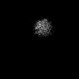
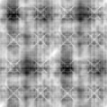
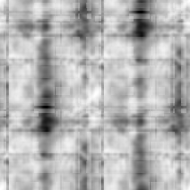

最小
最大
平均値
標準偏差
標準誤差
-0.959089
1
0.0408768
0.411404
0.00194978
| オプション | 必須項目/選択項目 | NULL | デフォルト |
|---|---|---|---|
| -i | 必須 | 入力ファイル設定 | NULL |
| -r | 必須 | 参照ファイル設定 | NULL |
| -dtheta | 選択 | ピクセルサイズを設定 | NULL |
| -o | 選択 | 出力ファイル設定 | stdout |
| -O | 選択 | 出力ファイル２設定 | NULL |
| -M | 選択 | モード１（コモンライン探索モード） | 1 |
| -m | 選択 | モード２ | 0 |
| -h | 選択 | ヘルプを表示 |
| モード | 説明 |
|---|---|
| 0 | フーリエ空間 |
| 1 | 実空間 |
| モード | 説明 |
|---|---|
| 0 | |
| 1 |
|  | 最小 |
0 |
最小 |
0 |
|
最小 |
-0.959089 |
|  | 最小 |
0.916889 |
最小 |
-1 |
|  | 最小 |
-0.2438 |